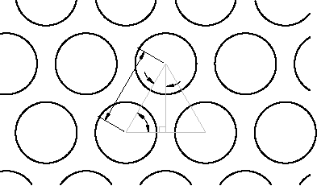

Autodesk AutoCAD 2021: ActiveX Developer's Guide > ActiveX/VBA Tutorial: Design the Garden Path > Tutorial: Designing a Garden Path (VBA/ActiveX) >
The drawtiles and drow subroutines are used to draw and calculate the circular tiles for the path.
The circular tiles are drawn at a given distance along the path specified by its first argument and the row is offset perpendicular to the path by a distance specified by its second argument. Each circular tile is drawn within the outline of the garden path based on the values obtained with the gpuser subroutine and stored in the global variables defined earlier. As each row of tiles is drawn, each successive row that is drawn is offset to cover more space and make a more pleasing arrangement.

' Place one row of tiles the given distance along path
' and possibly offset it
Private Sub drow(pd As Double, offset As Double)
Dim pfirst(0 To 2) As Double
Dim pctile(0 To 2) As Double
Dim pltile(0 To 2) As Double
Dim cir As AcadCircle
Dim varRet As Variant
varRet = ThisDrawing.Utility.PolarPoint(sp, pangle, pd)
pfirst(0) = varRet(0)
pfirst(1) = varRet(1)
pfirst(2) = varRet(2)
varRet = ThisDrawing.Utility.PolarPoint(pfirst, angp90, offset)
pctile(0) = varRet(0)
pctile(1) = varRet(1)
pctile(2) = varRet(2)
pltile(0) = pctile(0)
pltile(1) = pctile(1)
pltile(2) = pctile(2)
Do While distance(pfirst, pltile) < (hwidth - trad)
Set cir = ThisDrawing.ModelSpace.AddCircle(pltile, trad)
varRet = ThisDrawing.Utility.PolarPoint(pltile, angp90, (tspac + trad + trad))
pltile(0) = varRet(0)
pltile(1) = varRet(1)
pltile(2) = varRet(2)
Loop
varRet = ThisDrawing.Utility.PolarPoint(pctile, angm90, tspac + trad + trad)
pltile(0) = varRet(0)
pltile(1) = varRet(1)
pltile(2) = varRet(2)
Do While distance(pfirst, pltile) < (hwidth - trad)
Set cir = ThisDrawing.ModelSpace.AddCircle(pltile, trad)
varRet = ThisDrawing.Utility.PolarPoint( _
pltile, angm90, (tspac + trad + trad))
pltile(0) = varRet(0)
pltile(1) = varRet(1)
pltile(2) = varRet(2)
Loop
End SubThe drow subroutine draws only a single row of circular tiles, but can be used with a While loop to repeatedly draw all the circular tile rows. Tiles in adjacent rows form equilateral triangles, as shown in the previous illustration. The edges of these triangles are equal to twice the tile radius plus the spacing between the tiles. Therefore, by trigonometry, the distance along the path between rows is the sine of 60 degrees multiplied by this quantity, and the offset for odd rows is the cosine of 60 degrees multiplied by this quantity.
An If statement is used to force the offsetting of every other row. If the offset variable is equal to 0, set it to the spacing between the centers of tiles multiplied by the cosine of 60 degrees, as explained earlier. If the offset variable is not equal to 0, set it to 0. This alternates the offset on the rows as you want.
' Draw the rows of tiles
Private Sub drawtiles()
Dim pdist As Double
Dim offset As Double
pdist = trad + tspac
offset = 0
Do While pdist <= (plength - trad)
drow pdist, offset
pdist = pdist + ((tspac + trad + trad) * Sin(dtr(60)))
If offset = 0 Then
offset = (tspac + trad + trad) * Cos(dtr(60))
Else
offset = 0
End If
Loop
End Sub